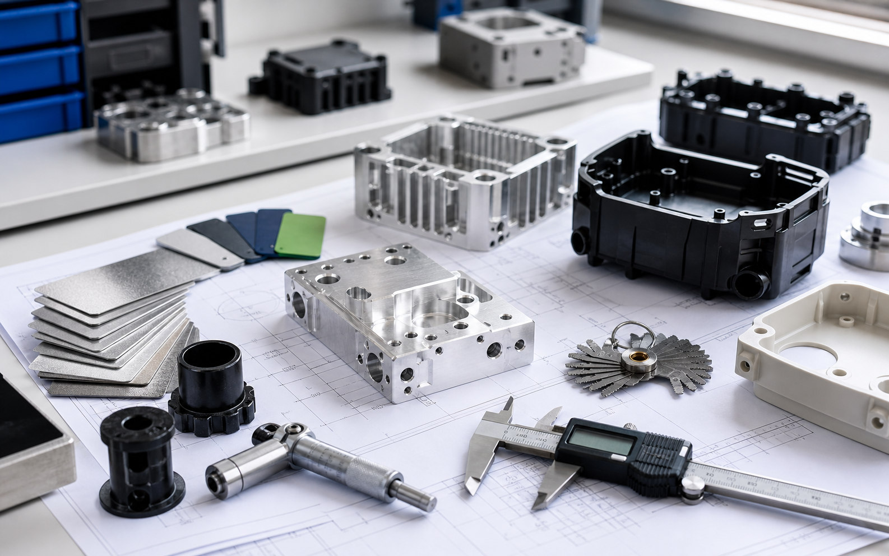

Custom plastic parts
DFM, material selection, prototypes, tooling feedback, and first small batches for plastic components.
Learn moreSmall-batch custom plastic and metal parts for startups, from DFM review and fast samples to pilot production. Share your drawing, prototype, or product idea and we will help turn it into manufacturable parts.

Proteform supports startup founders, product designers, and hardware teams that need real parts without getting lost in factory sourcing. We help clarify drawings, choose a practical manufacturing route, and follow the project through samples, inspection, and first batches.
Choose a focused route for your first real parts. Each service page is built for quote-ready startup projects, not generic catalog browsing.
DFM, material selection, prototypes, tooling feedback, and first small batches for plastic components.
Learn moreTooling review, T1 sample follow-up, pilot production, and practical molding project control.
Learn moreMachined aluminum, stainless, brass, copper, POM, finish planning, tolerance review, and inspection.
Learn morePlastic or metal product housings with inserts, sealing, finish, assembly, and pilot-run planning.
Learn moreManufacturability review before you approve a quote, sample route, tool, or small-batch order.
Learn moreSend your CAD, PDF drawing, photo, target quantity, material, and production goal.
Start RFQThe route should be clear before money is spent on tooling or production. Proteform starts with files and requirements, then moves through manufacturing review, supplier matching, sampling, and first batch delivery.
Share CAD, drawings, photos, material ideas, target quantity, application, and deadline.
Clarify manufacturability, tolerance, tooling, surface finish, assembly, and inspection points.
Compare prototype and small-batch options by cost, lead time, risk, and production readiness.
Follow up samples, pilot batches, dimensional checks, finish photos, packaging, and shipment.
Focused applications for hardware startups and product teams that need real parts for testing, launch, and first customer shipments.
IoT housings, sensor covers, controller cases, and handheld product shells.
Machined, printed, molded, or fabricated parts for fit, assembly, and field testing.
Brackets, plates, clips, spacers, fastener interfaces, and internal support structures.
Small batches used to test packaging, customer feedback, quality checks, and repeat production.
Paint, anodizing, texture, bead blasting, brushing, silk printing, and color control.
Inserts, threads, sealing features, labels, packaging, and pre-shipment verification.
We choose the route around your stage: fast prototype, quote-ready sample, T1 approval, or small-batch production. The goal is reliable parts, not a confusing catalog.
Plastic housings, clips, covers, threaded parts, inserts, T1 sample feedback, and pilot runs.
Aluminum, stainless, brass, copper, POM, prototype parts, low-volume parts, and fixtures.
Laser cutting, bending, covers, brackets, panels, pilot batches, powder coating, and fasteners.
Anodizing, painting, plating, polishing, silk printing, inserts, labels, packaging, and inspection.
Startup projects often change after testing. We help pick materials that work for prototypes now and remain practical for small-batch production later.
ABS, PC, PP, PA, POM, PMMA, TPE, silicone, recycled-content options where performance allows.
Aluminum, stainless steel, carbon steel, brass, copper, zinc alloy, and common sheet grades.
Anodizing, powder coating, painting, polishing, plating, passivation, brushing, bead blasting.
STEP, STL, IGES, DXF, PDF drawings, photos, BOMs, tolerance notes, target price, and application use.
These examples show the type of RFQs Proteform is built to handle: specific parts, clear requirements, manufacturing decisions, and practical small-batch follow-up.
Reviewed thread release, O-ring compression, recycled PP risk, and T1 sample route.
Discuss a similar caseBalanced prototype speed, anodizing color control, tapped-hole inspection, and export packing.
Send machining filesChecked bend radius, powder-coat finish, fastener alignment, and pilot-batch acceptance.
Review a drawingThe service promise is simple: confirm requirements in writing, match the job to the right supplier, inspect the parts that matter, and keep the buyer informed before risk becomes expensive.
Send your process, material, quantity, drawing status, and project goal. A useful first reply should clarify missing details, DFM risks, quote assumptions, lead time, and sample plan.
Best-fit projects are drawing-driven custom parts, prototype-to-pilot builds, startup hardware products, enclosures, brackets, fixtures, and small batches where communication speed and DFM judgment matter.
Send drawings, photos, target quantity, material, finish, delivery country, and your product stage.
Send RFQ Email